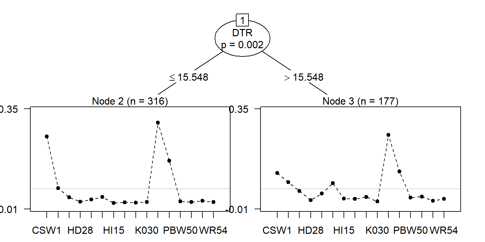

Overview.RmdThe ClimMobTools package provides the toolkit employed in crowdsourcing citizen science projects under the tricot approach. Tricot, stands for “triadic comparison of technologies”, an approach developed by van Etten et al. (2016)1 for the rapid assessment of on-farm evaluation trails in small-scale agriculture.
The development version can be installed via
install.packages("devtools")
devtools::install_github("kauedesousa/ClimMobTools", upgrade = "never")The breadwheat is a dataframe from crowdsourcing citizen-science trials of bread wheat (Triticum aestivum) varieties in India. This is a sample data available at the ClimMob that can be fetched using using the function getDataCM from ClimMobTools and an API key from the ClimMob portal.
library("ClimMobTools")
#install.packages("devtools")
#devtools::install_github("kauedesousa/gosset", upgrade = "never")
library("gosset")
library("PlackettLuce")
library("tidyverse")
library("magrittr")
# the API key
key <- "d39a3c66-5822-4930-a9d4-50e7da041e77"
data <- ClimMobTools::getDataCM(key = key,
project = "breadwheat")
head(data)
#> # A tibble: 6 x 4
#> id moment variable value
#> <int> <fct> <chr> <chr>
#> 1 1 package participant_name Participant Name1
#> 2 1 package item_A CSW18
#> 3 1 package item_B PBW502
#> 4 1 package item_C HW2045
#> 5 1 registration surveyid 14c7cfd6-51c3-11e9-a394-0686a00ebfc0
#> 6 1 registration survey_deviceim~ API_d39a3c66-5822-4930-a9d4-50e7da04~The function getDataCM returns a dataframe in the long format to allows the organisation of projects with different structure. We can put this into wide format where each row is a farmer observation using tidyverse.
# reshape the data into the wide format
# we also remove some variables that refer to the ODK survey employed for the data collection
data %<>%
filter(!str_detect(variable, "survey")) %>%
group_by(id) %>%
distinct(id, variable, value) %>%
spread(variable, value)The PlackettLuce model is one approach to analyse the tricot data2. To do so, we need to convert the farmers’ ranking into a object of class ‘rankings’ or ‘grouped_rankings’. A object of class ‘rankings’ is a matrix of dense rankings that can be used to fit a PlackettLuce model using PlackettLuce from PlackettLuce. A object of class ‘grouped_rankings’ associates a group index with an object of class ‘rankings’, then it allows the rankings to be linked to explanatory variables and fit a PlackettLuce model using pltree from PlackettLuce.
We can convert the farmers’ rankings in into a rankings object using the function to_rankings from package gosset. The argument grouped.rankings return a object of class ‘grouped_rankings’.
G <- to_rankings(data,
items = c("item_A","item_B","item_C"),
rankings = c("overallperf_pos","overallperf_neg"),
type = "tricot",
grouped.rankings = TRUE)
head(G, 10)
#> 1 2 3
#> "CSW18 > PBW502 > ..." "HD2985 > PBW550 ..." "PBW343 > HD2932 ..."
#> 4 5 6
#> "CSW18 > DBW17 > ..." "CSW18 > DBW17 > ..." "CSW18 > HP1633 > ..."
#> 7 8 9
#> "HW2045 > PBW550 ..." "RAJ4120 > DBW17 ..." "PBW502 > HI1563 ..."
#> 10
#> "CSW18 > HD2985 > ..."Environmental variables can easily be included into the data set using the longitude and latitude information from the tricot and the planting dates for each plot. In this exercise we include the heat stress indices using the function temperature from ClimMobTools.
# first we convert the lon lat into numeric
# and the planting dates into Date
data %<>%
mutate(lon = as.numeric(lon),
lat = as.numeric(lat),
plantingdate = as.Date(plantingdate,
format = "%Y-%m-%d"))
# then we get the temperature indices
# get some variables to include in the model
# from the planting date to the next 120 days
temp <- temperature(data[c("lon","lat")],
day.one = data["plantingdate"],
span = 120)
#> fetching NASA POWER, this may take a little longer.
modeldata <- cbind(G, temp)
head(modeldata)
#> G maxDT minDT maxNT minNT SU TR DTR
#> 1 CSW18 > PBW502 > ... 38.58 20.65 23.03 4.63 37 0 15.53933
#> 2 HD2985 > PBW550 ... 38.58 20.65 23.03 4.63 34 0 15.54842
#> 3 PBW343 > HD2932 ... 39.51 20.65 23.95 4.63 42 0 15.55067
#> 4 CSW18 > DBW17 > ... 38.58 20.65 23.03 4.63 33 0 15.53900
#> 5 CSW18 > DBW17 > ... 37.02 20.65 20.54 4.63 28 0 15.50008
#> 6 CSW18 > HP1633 > ... 38.58 20.65 23.03 4.63 34 0 15.54842Now we fit the model using the function pltree from PlackettLuce with temperature indices as explanatory variables.
tree <- pltree(G ~ ., data = modeldata, npseudo = 5)
print(tree)
#> Plackett-Luce tree
#>
#> Model formula:
#> G ~ .
#>
#> Fitted party:
#> [1] root
#> | [2] DTR <= 15.54842: n = 316
#> | CSW18 DBW17 DPW621-50 HD2824 HD2932 HD2985
#> | 0.0000000 -1.3500262 -2.0642075 -2.7367018 -2.3404488 -2.0210610
#> | HI1563 HP1633 HW2045 K0307 K9107 PBW343
#> | -3.0701465 -2.9472322 -3.0152383 -2.8251093 0.1840145 -0.4262006
#> | PBW502 PBW550 RAJ4120 WR544
#> | -2.6580694 -2.8335694 -2.5902226 -2.8427540
#> | [3] DTR > 15.54842: n = 177
#> | CSW18 DBW17 DPW621-50 HD2824 HD2932 HD2985
#> | 0.00000000 -0.32664651 -0.78835001 -1.71056606 -0.95950802 -0.36382204
#> | HI1563 HP1633 HW2045 K0307 K9107 PBW343
#> | -1.47219807 -1.52568770 -1.29566827 -1.97724897 0.76542436 0.04559096
#> | PBW502 PBW550 RAJ4120 WR544
#> | -1.34900699 -1.25988861 -1.79841219 -1.53531151
#>
#> Number of inner nodes: 1
#> Number of terminal nodes: 2
#> Number of parameters per node: 16
#> Objective function (negative log-likelihood): 664.6034The PlackettLuce model shows that the bread wheat variaties had a different performance under a threshold of 15.5 degrees Celsius for the diurnal temperature range (DTR).

1. van Etten, J., Beza, E., Calderer, L. & van Duijvendijk, K. et al. First experiences with a novel farmer citizen science approach: Crowdsourcing participatory variety selection through on-farm triadic comparisons of technologies (tricot). Experimental Agriculture 1–22 (2016).
2. Turner, H., van Etten, J., Firth, D. & Kosmidis, I. Modelling rankings in R: The PlackettLuce package. arXiv:1810.12068 (2018).